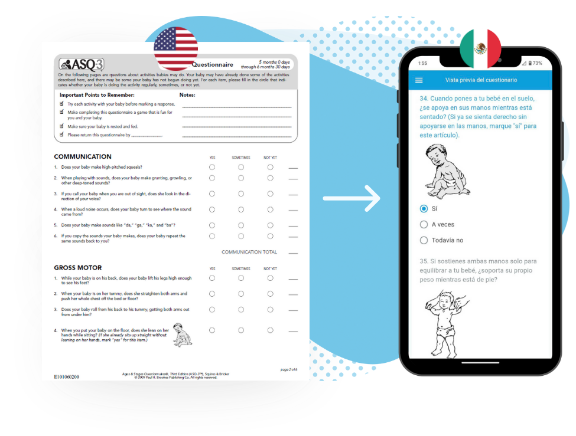
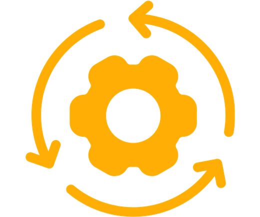

Conditional logic
Questions adapt based on responses
Diya Forms™ enables patients to complete intake forms, consents, and questionnaires in their language — directly within existing EHR and Patient Portal workflows

Forms are the first point where patient understanding becomes clinical data. Yet for many patients, especially those with limited English proficiency, forms are often:
Confusing or unclear
Incomplete or partially filled
Delayed or skipped
Completed by unauthorized family

Missing or inaccurate data
Unsafe assumptions
Staff workarounds
Repeated explanations
Delays in care
Diya Forms™
Supports patient understanding for safe care while enabling reuse across sites and departments
Registration & Intake Forms

Examples:
Demographics
Family History
Medical History
Consents & Disclosures
Examples:
HIPAA Acknowledgement
Consent to Care
Clinical Questionnaires
Examples:
Ages & Stages Questionnaire
Medication Reconciliation
Behavioral & Social Screenings
Examples:
PHQ-9
GAD-7
MChat
Transforms existing forms into patient-ready, clinically usable experiences — embedded in care workflows

Diya Forms™ is purpose-built for regulated healthcare environments
Works with existing EHRs & Patient Portals
Delivered in the patient's language
Preserves form structure, logic, & clinical meaning
Enterprise-grade security & governance
Capabilities health systems need to support clinical decision-making
Conditional logic
Questions adapt based on responses
Multi-role input
Patient, authorized family, or staff participation when appropriate
Clinical scoring
Automated calculation of results
EHR-integrated
No print-outs or manual re-entry
Diya Forms™ operates within Diya Safe AI™ for use in regulated clinical environments

The Diya Safe AI™ framework provides:

Audit trails & submission tracking
Monitoring & reporting
Secure handling of clinical & patient data
Alignment with healthcare data protection & governance standards
When Diya Forms™ is deployed, health systems see measurable improvements across care delivery
Faster intake & screenings for LEP patients
Higher data completeness & accuracy
Fewer staff workarounds & re-explanation
More reliable inputs for downstream clinical decisions

Greater consistency across sites & departments

45
4.5/5
95%

Diya Forms™ supports providers and patients before, during, and after care


A clear, low-risk path from evaluation to adoption
Working Session
Identify high-need healthcare forms where language barriers create friction, delay, or risk

Defined Pilot
Deploy Diya Forms™ in one high-impact use case with clearly defined success criteria
Evidence-Based Expansion
Scale based on pilot outcomes, prioritizing areas with the greatest need
Explore how Diya ensures patient understanding wherever care happens